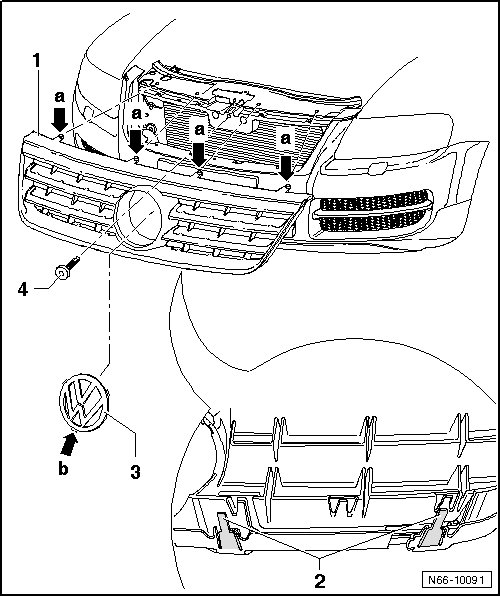

Radiator Grille, Through 10.2006
Radiator Grille
Radiator Grille, through 10.2006
Removing

- Carefully unclip the emblem - 3 - from the radiator grille - 1 - using a small screw driver.
- Begin with the lower locking tab - arrow B -. By doing so, damage is prevented.
- Remove the bolt - 4 -.
- Release locking tabs - arrows - on lock carrier using small screwdriver.
- Reach through the opening in the radiator grille, loosen the locking tabs - 2 - (2 on left and right) with light downward pressure and pull the radiator grille forward and out of the bumper cover.
Installing
To install, perform the steps used for removal in reverse order.
• When radiator grille is installed, locking tabs must engage audibly into lock carrier.